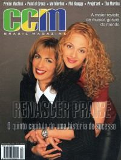

Renascer Praise
|  |
| December 1998 CCM Brasil |
 |
| December 1999 CCM Brasil |
Media coverage:
- Dec 1998 in CCM Brasil "Um dos maiores groupos de louvor do País lança seu quinto trabalho", by Karina Gouêva
- 1999 in CCM Brasil "Renascer Praise"
- Dec 1999 in CCM Brasil "Alçando Vôos Mais Altos", by Karina Gouêva
Albums & reviews:
1993: Renascer Praise 1
1995: Renascer Praise 2
1996: Renascer Praise 3 - Ao Vivo
1997: Renascer Praise 4 - Ao Vivo
1998: Renascer Praise 5 - Ao Vivo
1999: Renascer Praise 6 - Ao Vivo
1999: Renascer Praise em Espanhol
2005: Renascer Praise XI
2014: 18: Canto De Sião
1995: Renascer Praise 2
1996: Renascer Praise 3 - Ao Vivo
1997: Renascer Praise 4 - Ao Vivo
1998: Renascer Praise 5 - Ao Vivo
1999: Renascer Praise 6 - Ao Vivo
1999: Renascer Praise em Espanhol
2005: Renascer Praise XI
2014: 18: Canto De Sião
Award Summary (Nominations / Wins)
Latin Grammy Awards- 2014 Latin Grammy Awards
- Best Christian Album (Portuguese Language): 18: Canto De Sião
© 2011 CMnexus. Last updated April 2021. Contact: editor -AT- cmnexus -DØT- org About